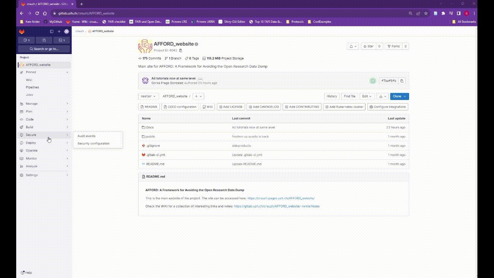

Gitlab Tutorial 3. Continuous Integration (CI)
Additional details on basic customization of CI pipelines
Why is this useful?
We can make use of the continuous integration (CI) feature in systems like Gitlab to improved interoperability and reproducibility. CI allows to use our Gitlab repository to run scripts directly in the web browser, without the need to download any software. For example, it allows to automatically update our website or data hub whenever a change in the repository is detected. Thus, different users can edit and conduct analysis in the same software environment and from the web-browser. This tutorial presents a simple use case of this feature.
Overview
Continuous integration (CI) refers to the process of automating the integration of changes made by different developers working in the code. In the context of using Gitlab pages as a data hub, the CI will integrating changes in the metadata table and/or images into the resulting HTML. That is, it will update our website so that it shows the last version of our metadata and include any change we want in its content. The advantage is that users do not require to install any software dependencies (like R) and changes can be implemented using the browser, from any computer.
Simplifying this There are 2 main elements we need to set up for Gitlab CI:
1. Gitlab Runner
This is the service that will execute whatever operation you want to do in your CI pipeline. In this case we will use a shared-runner that is supported by the UZH. We only have this if we have our gitlab repository as part of the UZH Gitlab. We can also use our own runners but that is more complicated and beyond the scope of this tutorial (see Gitlab official documentation)
You can enable the shared-runner in your repository Settings> CI/CD > Runners. If you are using the UZH Gitlab there should be an available runner listed on the Shared runners section

2. The .gitlab-ci.yml file
This file defines a pipeline which will run every time we make a change in the repository. A pipeline can have one or multiple jobs defined by a script (see complete documentation (here)[https://docs.gitlab.com/ee/ci/]. In the following example the pipeline has one job: rendering the website using R Quarto markdown files (see our tutorial on making a website with R quarto from scratch).
There are examples and Continous Integration templates of this file online. They all need an image of a software environment, some jobs defined by a script and some artifacts that are output files from the jobs. The example below uses an image from and it is nased on a template taken from Rocker, which is a project offering docker containers for R environments. Broadly speaking, we can think of a docker container as a light-weight virtual machine and of a docker image as a snapshot of a virtual machine, what defines its software contents.
Below we show and describe the following example:
image: rocker/verse:4.3
pages:
stage: deploy
before_script:
- R -e "install.packages('quarto')"
- R -e "install.packages('kableExtra')"
- R -e "install.packages('DT')"
- mkdir -p public/SPring/Images
- cp _data/SPring/Images/* public/SPring/Images/
script:
- cd _scripts
- R -e "baseDir <- getwd(); quarto::quarto_render('*.qmd')"
- mv ./_site/* ../public/
artifacts:
paths:
- public
only:
- master
interruptible: trueImage
- The first part loads a
docker container image, similar to a snapshot of a virtual machine, which will define a software environment.
Pages
We define different
stages(deploy is the main, but some tests stages are usually included as well).Because our image did not include some R packages that we need, we install them in the
before the scriptsection. The following lines after installing packages are to create a new folder with copies of the pictures that will be rendered in the website, in the ‘public’ folder (see below, this is the folder where the website html needs to be stored).Then the
scriptto actually do the job. First for convenience here we set the _scripts folder as our current directory. Then we run the R code using the R quarto package to build a website by using the command quarto_render indicating all .qmd files in the folder. In our case the .qmd contain text and code to read tables with metadata (see our tutorial on how to make a website with Quarto). Thequarto_render()command will automatically create a_sitefolder with the website. If we change a table or the text in one of those files, this will run again and generate the site again.We then move the content of the website to the public folder. This is necessary as Gitlab pages will only display the content of that folder
Although it is called ‘public’ it does not mean that the page will be publicly available. Gitlab allows pages in private repository so that only people with access can see the content.
- The job
artifactsare the outputs of the job. In this example, the website HTMLs rendered by quarto. We define the path where we want those outputs as the ‘public’ folder for it to work with Gitlab pages